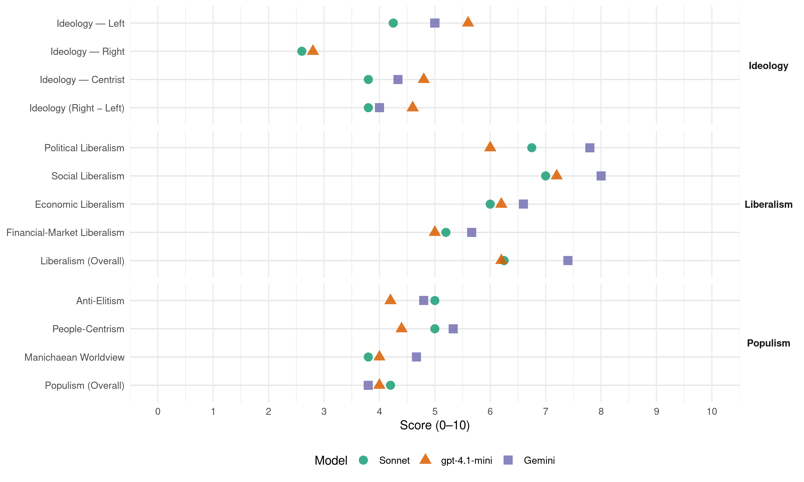

CDC (Spain, 2016)
manifesto_id 33911_201606
Get full text: This site shows derived annotations and short verbatim quotes only. The full manifesto text is © Manifesto Project / WZB — obtain it via manifesto-project.wzb.eu using the manifesto_id above.
Headline scores
| Dimension | Sonnet | gpt-4.1-mini | Gemini |
|---|---|---|---|
| Populism (Overall) | 4.2 | 4.0 | 3.8 |
| Anti-Elitism | 5.0 | 4.2 | 4.8 |
| People-Centrism | 5.0 | 4.4 | 5.3 |
| Manichaean Worldview | 3.8 | 4.0 | 4.7 |
| Ideology (Right − Left) | 3.8 | 4.6 | 4.0 |
| Liberalism (Overall) | 6.2 | 6.2 | 7.4 |
| Political Liberalism | 6.8 | 6.0 | 7.8 |
| Social Liberalism | 7.0 | 7.2 | 8.0 |
| Economic Liberalism | 6.0 | 6.2 | 6.6 |
| Financial-Market Liberalism | 5.2 | 5.0 | 5.7 |
Evidence per dimension
Economic Liberalism
Gemini · score 7.0 · verified · chunk 1
“Garantir la competitivitat empresarial”
les polítiques d’impuls sectorial 3.2.8 Garantir la competitivitat empresarial 3.2.9 Defensa dels interessos
Gemini · score 6.0 · verified · chunk 2
“criteris legals de competitivitat”
sense respectar els criteris legals de competitivitat i/o defensa dels consumidors existents
Gemini · score 6.0 · verified · chunk 3
“flexibilitat que les empreses demanden per competir”
responent a la lògica de la flexibilitat que les empreses demanden per competir i a la de la seguretat que els
Gemini · score 7.0 · verified · chunk 4
“afavorir la competència i agilitzarem els canvis normatius”
nova regulació per afavorir la competència i agilitzarem els canvis normatius necessaris per garantir
Gemini · score 7.0 · verified · chunk 5
“nova regulació per afavorir la competència”
Es definirà una nova regulació per afavorir la competència i agilitzarem els canvis normatius
gpt-4.1-mini · score 6.0 · verified · chunk 1
“Garantir la competitivitat empresarial”
3.2.8 Garantir la competitivitat empresarial 3.2.9 Defensa dels interessos de la petita i mitjana empresa i dels emprenedors autònoms 3.2.10 Acord Transatlàntic per al Comerç i la Inversió entre Europa i EUA (TTIP) 3.2.11 Unitat de mercat 3.2.12 Les infraestructures de futur: transport, comunicacions, TIC 3.2.13 Compromesos amb un país més saludable, respectuós amb la natura i el medi ambient
gpt-4.1-mini · score 6.0 · verified · chunk 2
“Incrementarem el salari mínim interprofessional”
…Lluitar contra la pobresa, fer efectiva la inclusió social i garantir el treball digne Incrementarem el salari mínim interprofessional fins a aconseguir l’objectiu establert a la Carta Social Europea de situar-lo en el 60% del salari mitjà (aproximadament uns 1.000 €/ mes) al llarg de la Legislatura. Impulsarem un acord, entre els interlocutors socials, per adoptar una estratègia que tingui per objectiu evitar l’existència de “treballadors pobres”…
gpt-4.1-mini · score 6.0 · verified · chunk 3
“Impulsarem una reducció de les quotes empresarials en sectors intensius en mà d’obra”
Impulsarem una reducció de les quotes empresarials en sectors intensius en mà d’obra i dels costos laborals de les ocupacions menys qualificades i remunerades. Potenciarem els sectors ambientals que poden generar nova ocupació amb incentius fiscals, administratius i socials, per afavorir la creació d’ocupació en l’àmbit de l’economia verda.
gpt-4.1-mini · score 7.0 · verified · chunk 4
“promoure la competitivitat”
La política fiscal ha de ser un instrument important d’estímul per facilitar la competitivitat. Per exemple, des del 2013 hi ha 25 estats de la UE que han ampliat els seus incentius a la R+D+i.
gpt-4.1-mini · score 6.0 · verified · chunk 5
“Apostem per un model industrial basat en la reconversió de sistemes productius ineficients”
…El repte és global però Catalunya hi ha de contribuir en la seva mesura. Apostem per un model industrial basat en la reconversió de sistemes productius ineficients. Una indústria orientada a aprofitar al màxim les noves oportunitats estratègiques i les possibilitats tecnològiques, que contribueixi a millorar els sistemes productius, fent-los més eficients, més competitius, més exigents introduint les millors tècniques disponibles tal com estableix la UE i més sostenibles…
Sonnet · score 6.0 · verified · chunk 1
“Garantir la competitivitat empresarial”
3.2.8 Garantir la competitivitat empresarial 3.2.9 Defensa dels interessos de la petita i mitjana empresa i dels emprenedors autònoms
Sonnet · score 5.0 · mixed · chunk 2
“criteris legals de competitivitat”
empreses d’altres comunitats autònomes, emparant-se en regulacions més laxes d’altres territoris, poden treballar sense respectar els criteris legals de competitivitat i/o defensa dels consumidors
Sonnet · score 5.0 · verified · chunk 3
“competitivitat de les nostres empreses”
per tal de garantir els drets de les persones treballadores, per impulsar el creixement i la competitivitat de les nostres empreses i per facilitar la creació i el manteniment d’ocupació de qualitat.
Sonnet · score 7.0 · verified · chunk 4
“estimuli més la creació d’ocupació”
Promourem una fiscalitat: Que estimuli més la creació d’ocupació. Que contribueixi a combatre les desigualtats
Sonnet · score 6.0 · verified · chunk 5
“nova regulació per afavorir la competència”
Es definirà una nova regulació per afavorir la competència i agilitzarem els canvis normatius necessaris per garantir l’abaratiment dels serveis
Financial-Market Liberalism
Gemini · score 5.0 · verified · chunk 2
“garantir l’accés al crèdit”
Garantir l’accés al crèdit per a capitalització i circulant de les diferents línies
Gemini · score 5.0 · verified · chunk 3
“Garantirem l’accés al crèdit per a capitalització”
garantir la viabilitat i sostenibilitat de les entitats. Garantirem l’accés al crèdit per a capitalització i circulant de les diferents línies de
Gemini · score 7.0 · verified · chunk 4
“estatut de l’inversor que protegeixi els inversors minoristes”
Aprovarem un estatut de l’inversor que protegeixi els inversors minoristes i apliqui la normativa
gpt-4.1-mini · score 5.0 · verified · chunk 1
“Tutela financera sobre la Generalitat”
Tutela financera sobre la Generalitat Amb el pretext de la crisi i en aplicació de la Llei d’estabilitat pressupostària i sostenibilitat financera, el Govern central ha exercit una autèntica tutela financera sobre la Generalitat de Catalunya, tutela que finalment ha reblat amb l’acord de la Comissió Delegada del Govern per Assumptes Econòmics de 20 de novembre, que suposa la intervenció financera del Govern de la Generalitat.
gpt-4.1-mini · score 3.0 · verified · chunk 2
“Garantirem l’accés al crèdit per a capitalització i circulant”
…Garantirem l’accés al crèdit per a capitalització i circulant de les diferents línies de l’Institut de Crèdit Oficial (ICO) a les entitats del tercer sector, i adoptarem mesures perquè anualment s’executin la totalitat dels fons assignats a les diferents línies. Promourem la seva funció, també com a font de finançament, a través d’avals que facilitin l’accés al crèdit en les millors condicions financeres possibles…
gpt-4.1-mini · score 7.0 · verified · chunk 4
“protecció dels consumidors en l’àmbit financer”
Millorarem la regulació del crowdlending i el crowdfunding, i regularem la resta del micromecenatge i el microfinançament, amb mesures de declaració responsable per aconseguir el foment de les finances alternatives realitzades a través de les plataformes digitals, i alhora, garantint la protecció dels consumidors.
Sonnet · score 5.0 · verified · chunk 1
“Política financera”
3.2.5 Política financera [listed as a section heading alongside fiscal and energy policy in the economic programme]
Sonnet · score 5.0 · verified · chunk 2
“rebaixa dels tipus d’interès i la millora de les condicions financeres dels préstecs”
L’Estat ha condicionat la rebaixa dels tipus d’interès i la millora de les condicions financeres dels préstecs atorgats a l’empara dels mecanismes extraordinaris de finançament
Sonnet · score 5.0 · verified · chunk 3
“accés al crèdit per a capitalització”
Garantirem l’accés al crèdit per a capitalització i circulant de les diferents línies de l’Instituto de Crédito Oficial (ICO) a les entitats del tercer sector
Sonnet · score 6.0 · verified · chunk 4
“diversifiqui els canals del crèdit i la inversió”
eviti posicions de domini en el mercat de qualsevol entitat i que diversifiqui els canals del crèdit i la inversió, incrementant la protecció dels consumidors
Sonnet · score 5.0 · verified · chunk 5
“Taxa a les Transaccions Financeres”
Impulsarem en el si de la Unió Europea la entrada en vigor de la Taxa a les Transaccions Financeres i assegurarem que a nivell de l’Estat
Political Liberalism
Gemini · score 8.0 · verified · chunk 1
“donar resposta política a un mandat democràtic”
defensar Catalunya i la gent que hi viu 1. Donar resposta política a un mandat democràtic 2. D’on venim
Gemini · score 8.0 · verified · chunk 2
“principi constitucional de separació de poders”
anti-Parlament de Catalunya que, a més, trenca amb el principi constitucional de separació de poders, de manera
Gemini · score 8.0 · verified · chunk 3
“ingerència en el principi d’autonomia local”
de la Administració local, ja que suposa una ingerència en el principi d’autonomia local que és injustificada i desproporcionada, i que
Gemini · score 7.0 · verified · chunk 4
“normes del Parlament de Catalunya”
dictar una sentencia en contra de les normes del Parlament de Catalunya que donaven resposta
Gemini · score 8.0 · verified · chunk 5
“garantir la independència dels vocals del Consejo”
Procedirem a l’adopció de mesures destinades a garantir la independència dels vocals del Consejo General del Poder Judicial
gpt-4.1-mini · score 6.0 · verified · chunk 1
“Millora de la qualitat democràtica”
3.4.1 Millora de la qualitat democràtica 3.4.2 Millora de la transparència, la participació i la rendició de comptes 3.4.3 La lluita contra la corrupció PREÀMBUL CONVERGÈNCIA, DAVANT EL #26J Les eleccions del 26 de juny són un fracàs de la política espanyola.
gpt-4.1-mini · score 4.0 · verified · chunk 2
“ha trencat normes fonamentals de la democràcia”
…No ho ha evitat, però en la seva fal·lera per fer-ho ha trencat normes fonamentals de la democràcia, com ara fer una reforma exprés del Tribunal Constitucional per donar resposta al procés català. La reforma de la Llei orgànica del Tribunal Constitucional va ser aprovada una setmana abans d’acabar aquella Legislatura amb l’únic suport parlamentari del Partit Popular…
gpt-4.1-mini · score 7.0 · verified · chunk 3
“Garantirem l’accés universal de tota la població als serveis sanitaris”
Salut: retorn a la universalització i millora del finançament de la sanitat La sanitat ha de ser universal, i el finançament de les prestacions sanitàries, suficient. Aquest compromís obliga a replantejar les polítiques desenvolupades pel Partit Popular en la Xa legislatura. Així, doncs: Garantirem l’accés universal de tota la població als serveis sanitaris, tenint una consideració especial amb els col·lectius socialment més vulnerables.
gpt-4.1-mini · score 7.0 · verified · chunk 4
“democràtica, d’acord amb els principis d’envelliment actiu”
Construirem un enfocament integrat, d’acord amb els principis d’envelliment actiu i no-discriminació per raó d’edat, promovent una nova cultura empresarial respecte dels valors positius del treball de les persones de més edat.
gpt-4.1-mini · score 6.0 · verified · chunk 5
“Cal impulsar des del Congrés dels Diputats mesures d’urgència relatives a una profunda regeneració democràtica”
…3.4.1 Millora de la qualitat democràtica Cal impulsar des del Congrés dels Diputats mesures d’urgència relatives a una profunda regeneració democràtica, que corregeixin el deteriorament de la democràcia durant la legislatura del 2011-2015, algunes de les quals ja han estat citades en apartats anteriors…
Sonnet · score 7.0 · verified · chunk 1
“seguint escrupolosament les regles democràtiques”
Tenim un mandat clar: la constitució d’un Estat català independent. I ho volem fer bé, seguint escrupolosament les regles democràtiques i el full de ruta compromès a les eleccions del 27 de setembre.
Sonnet · score 5.0 · mixed · chunk 2
“ha trencat normes fonamentals de la democràcia”
en la seva fal·lera per fer-ho ha trencat normes fonamentals de la democràcia, com ara fer una reforma exprés del Tribunal Constitucional
Sonnet · score 7.0 · verified · chunk 3
“sentències del Tribunal Constitucional i del Tribunal Suprem”
Exigirem al Govern de l’Estat el compliment immediat de les sentències del Tribunal Constitucional i del Tribunal Suprem respecte a la transferència a la Generalitat
Sonnet · score 6.0 · verified · chunk 4
“major participació dels Estats i dels seus parlaments”
transparència, informació sobre el seu contingut i sobre els seus efectes previsibles, així com major participació dels Estats i dels seus parlaments, com a condicions indispensables
Sonnet · score 7.0 · verified · chunk 5
“independència dels vocals del Consejo General”
mesures destinades a garantir la independència dels vocals del Consejo General del Poder Judicial i dels membres del Tribunal Constitucional
Liberalism (Overall)
Gemini · score 8.0 · verified · chunk 1
“donar resposta política a un mandat democràtic”
defensar Catalunya i la gent que hi viu 1. Donar resposta política a un mandat democràtic 2. D’on venim
Gemini · score 7.0 · verified · chunk 2
“principi constitucional de separació de poders”
anti-Parlament de Catalunya que, a més, trenca amb el principi constitucional de separació de poders, de manera
Gemini · score 7.0 · verified · chunk 3
“igualtat de gènere en matèria laboral”
És necessari desenvolupar polítiques en favor de la igualtat de gènere en matèria laboral que redueixin la “bretxa salarial”, destrueixin l’anomenat
Gemini · score 7.0 · verified · chunk 4
“afavorir la competència i agilitzarem els canvis normatius”
nova regulació per afavorir la competència i agilitzarem els canvis normatius necessaris per garantir
Gemini · score 8.0 · verified · chunk 5
“garantir la independència dels vocals del Consejo”
Procedirem a l’adopció de mesures destinades a garantir la independència dels vocals del Consejo General del Poder Judicial
gpt-4.1-mini · score 6.0 · verified · chunk 1
“Millora de la qualitat democràtica”
3.4.1 Millora de la qualitat democràtica 3.4.2 Millora de la transparència, la participació i la rendició de comptes 3.4.3 La lluita contra la corrupció PREÀMBUL CONVERGÈNCIA, DAVANT EL #26J Les eleccions del 26 de juny són un fracàs de la política espanyola.
gpt-4.1-mini · score 5.0 · verified · chunk 2
“Incrementarem el salari mínim interprofessional”
…Lluitar contra la pobresa, fer efectiva la inclusió social i garantir el treball digne Incrementarem el salari mínim interprofessional fins a aconseguir l’objectiu establert a la Carta Social Europea de situar-lo en el 60% del salari mitjà (aproximadament uns 1.000 €/ mes) al llarg de la Legislatura. Impulsarem un acord, entre els interlocutors socials, per adoptar una estratègia que tingui per objectiu evitar l’existència de “treballadors pobres”…
gpt-4.1-mini · score 7.0 · verified · chunk 3
“Garantirem l’accés universal de tota la població als serveis sanitaris”
Salut: retorn a la universalització i millora del finançament de la sanitat La sanitat ha de ser universal, i el finançament de les prestacions sanitàries, suficient. Aquest compromís obliga a replantejar les polítiques desenvolupades pel Partit Popular en la Xa legislatura. Així, doncs: Garantirem l’accés universal de tota la població als serveis sanitaris, tenint una consideració especial amb els col·lectius socialment més vulnerables.
gpt-4.1-mini · score 7.0 · verified · chunk 4
“promoure la competitivitat”
La política fiscal ha de ser un instrument important d’estímul per facilitar la competitivitat. Per exemple, des del 2013 hi ha 25 estats de la UE que han ampliat els seus incentius a la R+D+i.
gpt-4.1-mini · score 6.0 · verified · chunk 5
“Cal impulsar des del Congrés dels Diputats mesures d’urgència relatives a una profunda regeneració democràtica”
…3.4.1 Millora de la qualitat democràtica Cal impulsar des del Congrés dels Diputats mesures d’urgència relatives a una profunda regeneració democràtica, que corregeixin el deteriorament de la democràcia durant la legislatura del 2011-2015, algunes de les quals ja han estat citades en apartats anteriors…
Sonnet · score 6.0 · verified · chunk 1
“regeneració democràtica”
la transparència, la lluita contra la corrupció, la rendició de comptes i la regeneració democràtica
Sonnet · score 5.0 · mixed · chunk 2
“ha trencat normes fonamentals de la democràcia”
en la seva fal·lera per fer-ho ha trencat normes fonamentals de la democràcia, com ara fer una reforma exprés del Tribunal Constitucional
Sonnet · score 6.0 · verified · chunk 3
“drets de les persones del col·lectiu LGTBI”
Avançarem en el reconeixement dels drets de les persones del col·lectiu LGTBI (lesbianes, gais, bisexuals, transgèneres i intersexuals) en tots els àmbits.
Sonnet · score 7.0 · verified · chunk 4
“mercat transparent i de serveis de suport”
Impulsarem l’establiment de mercats transparents i de serveis de suport i intermediació per afavorir la transmissió de petites empreses
Sonnet · score 6.0 · verified · chunk 5
“independència dels vocals del Consejo General”
mesures destinades a garantir la independència dels vocals del Consejo General del Poder Judicial i dels membres del Tribunal Constitucional
Anti-Elitism
Gemini · score 7.0 · verified · chunk 1
“la intransigència del govern del Partit Popular”
per una banda la intransigència del govern del Partit Popular, judicialitzant un projecte polític
Gemini · score 6.0 · verified · chunk 2
“govern absolutista i de la manca de diàleg”
aïllada de la resta de la societat a causa del govern absolutista i de la manca de diàleg que va practicar
Gemini · score 3.0 · verified · chunk 3
“ofensiva premeditada d’ofec financer duta a terme pel govern del PP”
ha votat el 27 de setembre l’aspiració d’un futur en llibertat. L’ofensiva premeditada d’ofec financer duta a terme pel govern del PP ha agreujat la gestió de la crisi a Catalunya.
Gemini · score 4.0 · verified · chunk 4
“l’abús de poder per part de la gran empresa”
Els autèntics costos monopolístics els representa l’abús de poder per part de la gran empresa, sigui regulada o no.
Gemini · score 4.0 · verified · chunk 5
“l’ús partidista de la política de seguretat”
El govern del PP ha estat caracteritzat per l’ús partidista de la política de seguretat que ha portat a terme
gpt-4.1-mini · score 7.0 · verified · chunk 1
“Les eleccions del 26 de juny són un fracàs de la política espanyola”
PREÀMBUL CONVERGÈNCIA, DAVANT EL #26J Les eleccions del 26 de juny són un fracàs de la política espanyola. No hi ha precedents en democràcies properes sobre la incapacitat de pactar un govern de coalició, com ha succeït a Espanya. S’ha hagut de convocar una segona volta del 20 de desembre perquè els partits no han estat capaços de gestionar la complexitat.
gpt-4.1-mini · score 3.0 · verified · chunk 2
“govern absolutista i de la manca de diàleg”
…PP com a primera força, però ha estat incapaç, perquè viu aïllada de la resta de la societat a causa del govern absolutista i de la manca de diàleg que va practicar en la legislatura anterior, i també, fruït de la seva continuada, constant i extensa manca de transparència; el segon acord factible era el pacte d’esquerres…
gpt-4.1-mini · score 4.0 · verified · chunk 3
“denunciar la inactivitat i el incompliment dels compromisos i de la legalitat internacional vigent, per part del Govern espanyol”
ades per la guerra i que cerquen refugi i protecció. No defallirem en denunciar la inactivitat i el incompliment dels compromisos i de la legalitat internacional vigent, per part del Govern espanyol davant la crisi humanitària dels refugiats. Reclamarem la suspensió de l’acord entre la UE i Turquia i exigirem una resposta a l’alçada del que representa Europa i de la dimensió de la crisi humanitària.
gpt-4.1-mini · score 3.0 · verified · chunk 4
“el Govern del PP no ho ha aprofitat”
Aquest context permetria impulsar el creixement de l’economia espanyola, però el Govern del PP no ho ha aprofitat. L’actual ritme de recuperació espanyol és superior al de la resta de països d’Europa occidental, però és encara insuficient per generar ocupació de qualitat i tampoc no és la més vigorosa.
gpt-4.1-mini · score 4.0 · verified · chunk 5
“l’objectiu real és unificar, centralitzar, suprimir i coordinar tots els serveis de l’Administració”
…racionalitzar l’Administració i suprimir duplicitats. En realitat, l’objectiu real és unificar, centralitzar, suprimir i coordinar tots els serveis de l’Administració sota el principi de superioritat jeràrquica de l’Administració General de l’Estat sense més argument que la suposada racionalització. Un objectiu que busca el control i la burocratització de les administracions territorials i no de racionalització. Com a exemples de les mesures CORA ja aprovades, cal citar la Llei de racionalització…
Sonnet · score 6.0 · verified · chunk 1
“incapacitat de donar resposta al fet català”
S’ha hagut de convocar una segona volta del 20 de desembre perquè els partits no han estat capaços de gestionar la complexitat. I part d’aquest desenllaç ve donat per la incapacitat de donar resposta al fet català.
Sonnet · score 5.0 · verified · chunk 2
“govern absolutista i de la manca de diàleg”
viu aïllada de la resta de la societat a causa del govern absolutista i de la manca de diàleg que va practicar en la legislatura anterior
Sonnet · score 5.0 · verified · chunk 3
“polítiques de l’Executiu del Partit Popular”
En aquest àmbit cal denunciar les polítiques de l’Executiu del Partit Popular. Enlloc d’afrontar les polítiques d’austeritat des de la racionalització
Sonnet · score 4.0 · verified · chunk 4
“el Govern del PP no ho ha aprofitat”
context permetria impulsar el creixement de l’economia espanyola, però el Govern del PP no ho ha aprofitat. L’actual ritme de recuperació
Sonnet · score 5.0 · verified · chunk 5
“objectius de màrqueting d’Estat”
cosa que treu veracitat al balanç i el situa en el terreny dels documents de màrqueting d’Estat. La realitat és que el veritable estalvi
Ideology — Centrist
Gemini · score 7.0 · verified · chunk 1
“defensar Catalunya i la gent que hi viu”
DE LA POST-AUTONOMÍA A LA PRE-INDEPENDÈNCIA. DEFENSAR CATALUNYA I LA GENT QUE HI VIU
Gemini · score 3.0 · verified · chunk 3
“ofensiva premeditada d’ofec financer duta a terme pel govern del PP”
ha votat el 27 de setembre l’aspiració d’un futur en llibertat. L’ofensiva premeditada d’ofec financer duta a terme pel govern del PP ha agreujat la gestió de la crisi a Catalunya.
Gemini · score 3.0 · verified · chunk 5
“tornar la política a la ciutadania”
Creiem que cal tornar la política a la ciutadania, cal recuperar la cultura dels valors
gpt-4.1-mini · score 7.0 · verified · chunk 1
“un moviment plural i transversal imparable. Un moviment per a tothom, pacífic, democràtic i que no exclou ningú”
El món ens observa i està amatent a aquest moviment plural i transversal imparable. Un moviment per a tothom, pacífic, democràtic i que no exclou ningú, que busca amb la mà estesa construir un nou marc de relacions que faci possible un futur millor per als ciutadans de Catalunya; una vida millor.
gpt-4.1-mini · score 6.0 · verified · chunk 2
“la qüestió catalana és, segons han reconegut diferents actors polítics espanyols”
…La qüestió catalana és, segons han reconegut diferents actors polítics espanyols, una qüestió de transcendència. Es podria dir, fins i tot, que és un “afer d’estat”. Indubtablement ha ocupat una notable atenció ciutadana, mediàtica i política des de fa 10 anys, moment en que es tramitava el nou Estatut d’Autonomia…
gpt-4.1-mini · score 3.0 · verified · chunk 3
“Impulsarem un acord polític, amb la participació dels governs autonòmics i de les diferents forces parlamentàries”
Promourem un increment sostingut de la despesa en salut, educació i serveis socials, respecte a la despesa global de les administracions públiques. Impulsarem un acord polític, amb la participació dels governs autonòmics i de les diferents forces parlamentàries, per garantir el manteniment de l’estat del benestar.
gpt-4.1-mini · score 4.0 · verified · chunk 4
“garantir oportunitats a les persones”
Urgeix, que el Govern espanyol reorienti la política econòmica i assentar les bases d’un nou model de creixement econòmic productiu i pròsper, capaç d’afrontar els grans reptes de futur i garantir oportunitats a les persones.
gpt-4.1-mini · score 4.0 · verified · chunk 5
“Impulsarem la participació de les institucions catalanes en totes les negociacions de l’Estat”
…Mentre la desconnexió legal de Catalunya amb l’Estat no sigui efectiva, impulsarem la participació del Govern de Catalunya a la Unió Europea, i continuarem defensant els interessos dels ciutadans de Catalunya en la presa de decisions d’aquesta organització: Treballarem perquè la Unió Europea reconegui la voluntat del poble de Catalunya d’esdevenir un estat membre homologable a la resta de vint-i-vuit estats membres de la UE d’acord amb el mandat expressat per la ciutadania de Catalunya en les darreres eleccions al Parlament de Catalunya…
Sonnet · score 4.0 · verified · chunk 1
“un moviment per a tothom, pacífic, democràtic”
Un moviment per a tothom, pacífic, democràtic i que no exclou ningú, que busca amb la mà estesa construir un nou marc de relacions
Sonnet · score 4.0 · verified · chunk 2
“erigir-se en aquesta veu davant les institucions”
Convergència té com a principal raó de ser erigir-se en aquesta veu davant les institucions de l’Estat
Sonnet · score 3.0 · verified · chunk 3
“plantejament injust i deslleial”
És un plantejament injust i deslleial, en el qual els ciutadans en són els principals perjudicats.
Sonnet · score 3.0 · verified · chunk 4
“polítiques que atenguin adequadament les petites i mitjanes empreses”
fer polítiques que atenguin adequadament les petites i mitjanes empreses, els sectors consolidats i els sectors emergents
Sonnet · score 5.0 · verified · chunk 5
“defensar els interessos de Catalunya”
participaran activament en tots els debats que es produeixin en el Senat per a defensar els interessos de Catalunya
Ideology — Left
Gemini · score 5.0 · verified · chunk 2
“reduir les desigualtats com a garantia de creixement”
3.1.2 Reduir les desigualtats com a garantia de creixement sostenible i estable. Garantir que
Gemini · score 5.0 · verified · chunk 4
“combatre les desigualtats, de manera que aportin més els que més tenen”
Que contribueixi a combatre les desigualtats, de manera que aportin més els que més tenen.
gpt-4.1-mini · score 6.0 · verified · chunk 1
“Lluitar contra la pobresa, fer efectiva la inclusió social i garantir el treball digne”
3.1.3 Per un nou contracte social i un contracte generacional : Lluitar contra la pobresa, fer efectiva la inclusió social i garantir el treball digne Suport a les famílies amb nens Segones oportunitats per a persones vulnerables.
gpt-4.1-mini · score 7.0 · verified · chunk 2
“Incrementarem el salari mínim interprofessional”
…Lluitar contra la pobresa, fer efectiva la inclusió social i garantir el treball digne Incrementarem el salari mínim interprofessional fins a aconseguir l’objectiu establert a la Carta Social Europea de situar-lo en el 60% del salari mitjà (aproximadament uns 1.000 €/ mes) al llarg de la Legislatura. Impulsarem un acord, entre els interlocutors socials, per adoptar una estratègia que tingui per objectiu evitar l’existència de “treballadors pobres”…
gpt-4.1-mini · score 5.0 · verified · chunk 3
“incrementar la despesa en salut, educació i serveis socials”
Promourem un increment sostingut de la despesa en salut, educació i serveis socials, respecte a la despesa global de les administracions públiques. Impulsarem un acord polític, amb la participació dels governs autonòmics i de les diferents forces parlamentàries, per garantir el manteniment de l’estat del benestar.
gpt-4.1-mini · score 5.0 · verified · chunk 4
“combatre les desigualtats”
Promourem una fiscalitat: Que contribueixi a combatre les desigualtats, de manera que aportin més els que més tenen.
gpt-4.1-mini · score 5.0 · verified · chunk 5
“Apostem per un model industrial basat en la reconversió de sistemes productius ineficients”
…El repte és global però Catalunya hi ha de contribuir en la seva mesura. Apostem per un model industrial basat en la reconversió de sistemes productius ineficients. Una indústria orientada a aprofitar al màxim les noves oportunitats estratègiques i les possibilitats tecnològiques, que contribueixi a millorar els sistemes productius, fent-los més eficients, més competitius, més exigents introduint les millors tècniques disponibles tal com estableix la UE i més sostenibles…
Sonnet · score 5.0 · verified · chunk 1
“Reduir les desigualtats com a garantia de creixement sostenible”
3.1.2 Reduir les desigualtats com a garantia de creixement sostenible i estable. Eixamplar les classes mitjanes
Sonnet · score 5.0 · verified · chunk 2
“Incrementarem el salari mínim interprofessional”
Incrementarem el salari mínim interprofessional fins a aconseguir l’objectiu establert a la Carta Social Europea de situar-lo en el 60% del salari mitjà
Sonnet · score 4.0 · verified · chunk 4
“aportin més els que més tenen”
Que contribueixi a combatre les desigualtats, de manera que aportin més els que més tenen. Que afavoreixi el creixement econòmic
Sonnet · score 3.0 · verified · chunk 5
“lluita contra les desigualtats”
l’educació, la cultura, l’ocupació, la lluita contra les desigualtats són les millors eines per combatre la delinqüència
Ideology (Right − Left)
Gemini · score 7.0 · verified · chunk 1
“defensar Catalunya i la gent que hi viu”
DE LA POST-AUTONOMÍA A LA PRE-INDEPENDÈNCIA. DEFENSAR CATALUNYA I LA GENT QUE HI VIU
Gemini · score 5.0 · verified · chunk 2
“reduir les desigualtats com a garantia de creixement”
3.1.2 Reduir les desigualtats com a garantia de creixement sostenible i estable. Garantir que
Gemini · score 2.0 · verified · chunk 3
“ofensiva premeditada d’ofec financer duta a terme pel govern del PP”
ha votat el 27 de setembre l’aspiració d’un futur en llibertat. L’ofensiva premeditada d’ofec financer duta a terme pel govern del PP ha agreujat la gestió de la crisi a Catalunya.
Gemini · score 3.0 · verified · chunk 4
“combatre les desigualtats, de manera que aportin més els que més tenen”
Que contribueixi a combatre les desigualtats, de manera que aportin més els que més tenen.
Gemini · score 3.0 · verified · chunk 5
“tornar la política a la ciutadania”
Creiem que cal tornar la política a la ciutadania, cal recuperar la cultura dels valors
gpt-4.1-mini · score 7.0 · verified · chunk 1
“Les eleccions del 26 de juny són un fracàs de la política espanyola”
PREÀMBUL CONVERGÈNCIA, DAVANT EL #26J Les eleccions del 26 de juny són un fracàs de la política espanyola. No hi ha precedents en democràcies properes sobre la incapacitat de pactar un govern de coalició, com ha succeït a Espanya. S’ha hagut de convocar una segona volta del 20 de desembre perquè els partits no han estat capaços de gestionar la complexitat.
gpt-4.1-mini · score 5.0 · verified · chunk 2
“govern absolutista i de la manca de diàleg”
…PP com a primera força, però ha estat incapaç, perquè viu aïllada de la resta de la societat a causa del govern absolutista i de la manca de diàleg que va practicar en la legislatura anterior, i també, fruït de la seva continuada, constant i extensa manca de transparència; el segon acord factible era el pacte d’esquerres…
gpt-4.1-mini · score 3.0 · verified · chunk 3
“denunciar la inactivitat i el incompliment dels compromisos i de la legalitat internacional vigent, per part del Govern espanyol”
ades per la guerra i que cerquen refugi i protecció. No defallirem en denunciar la inactivitat i el incompliment dels compromisos i de la legalitat internacional vigent, per part del Govern espanyol davant la crisi humanitària dels refugiats. Reclamarem la suspensió de l’acord entre la UE i Turquia i exigirem una resposta a l’alçada del que representa Europa i de la dimensió de la crisi humanitària.
gpt-4.1-mini · score 4.0 · verified · chunk 4
“combatre les desigualtats”
Promourem una fiscalitat: Que contribueixi a combatre les desigualtats, de manera que aportin més els que més tenen.
gpt-4.1-mini · score 4.0 · verified · chunk 5
“Impulsarem la participació de les institucions catalanes en totes les negociacions de l’Estat”
…Mentre la desconnexió legal de Catalunya amb l’Estat no sigui efectiva, impulsarem la participació del Govern de Catalunya a la Unió Europea, i continuarem defensant els interessos dels ciutadans de Catalunya en la presa de decisions d’aquesta organització: Treballarem perquè la Unió Europea reconegui la voluntat del poble de Catalunya d’esdevenir un estat membre homologable a la resta de vint-i-vuit estats membres de la UE d’acord amb el mandat expressat per la ciutadania de Catalunya en les darreres eleccions al Parlament de Catalunya…
Sonnet · score 5.0 · verified · chunk 1
“la constitució d’un Estat català independent”
Tenim un mandat clar: la constitució d’un Estat català independent. I ho volem fer bé, seguint escrupolosament les regles democràtiques
Sonnet · score 4.0 · verified · chunk 2
“la veu al servei del poble de Catalunya”
la força i l’autoritat de la veu al servei del poble de Catalunya i del seu mandat expressada el 27 de setembre passat
Sonnet · score 3.0 · verified · chunk 3
“polítiques de l’Executiu del Partit Popular”
En aquest àmbit cal denunciar les polítiques de l’Executiu del Partit Popular. Enlloc d’afrontar les polítiques d’austeritat
Sonnet · score 3.0 · verified · chunk 4
“aportin més els que més tenen”
Que contribueixi a combatre les desigualtats, de manera que aportin més els que més tenen. Que afavoreixi el creixement econòmic
Sonnet · score 4.0 · verified · chunk 5
“defensar els interessos dels ciutadans de Catalunya”
impulsarem la participació del Govern de Catalunya en la presa de decisions global, i continuarem defensant els interessos dels ciutadans de Catalunya
Ideology — Right
gpt-4.1-mini · score 6.0 · verified · chunk 1
“defensar Catalunya amb fets, de prioritzar un futur de prosperitat i benestar per a tothom”
Ens presentem a aquestes eleccions amb el compromís de defensar Catalunya amb fets, de prioritzar un futur de prosperitat i benestar per a tothom. És per això que volem fer un país nou, per posar-lo al servei de les persones. Per forjar un país on la prioritat sigui la gent.
gpt-4.1-mini · score 2.0 · verified · chunk 2
“l’Estat vol imposar la fracturació hidràulica (fracking)”
…L’Estat vol imposar la fracturació hidràulica (fracking) i, via Tribunal Constitucional, s’ha oposat a la decisió del Parlament de Catalunya d’impedir el fracking a Catalunya. · Turisme Continua la recentralització en el repartiment de fons en matèria de turisme i l’Estat no territorialitza aquests fons malgrat la sentència del TC…
gpt-4.1-mini · score 2.0 · verified · chunk 3
“exigirem la derogació de la LOMCE i defensarem el model d’immersió lingüística”
Exigirem la derogació de la LOMCE i defensarem el model d’immersió lingüística. Garantirem que el català sigui reconegut i acceptat com a llengua de ple dret en tots els organismes internacionals, especialment tots els que depenen de l’entramat d’institucions europees.
gpt-4.1-mini · score 2.0 · verified · chunk 4
“exigirem la derogació de la Llei d’unitat de mercat”
La Llei d’unitat de mercat incentiva la proliferació d’activitats econòmiques basant-se en la premissa que la regulació més laxa és la que preval. En conseqüència, exigirem la derogació de la Llei d’unitat de mercat.
gpt-4.1-mini · score 2.0 · verified · chunk 5
“la discriminació parlamentària de Catalunya a l’Estat, impedint així una defensa adequada”
…Avui Catalunya, malgrat tenir el 16% de la població de l’Estat, els senadors i senadores nomenats des de Catalunya no arriben a representar ni el 10% del total de membres del Senat, mentre que territoris amb un terç de la població de Catalunya aporten molts més senadors. Dit d’una altra manera, el propi sistema electoral del Senat institucionalitza una discriminació parlamentària de Catalunya a l’Estat, impedint així una defensa adequada dels nostres interessos…
Sonnet · score 5.0 · verified · chunk 1
“Catalunya, nou estat d’Europa”
BLOC 3 CATALUNYA, NOU ESTAT D’EUROPA. EL PAÍS QUE ESTEM CONSTRUINT
Sonnet · score 3.0 · verified · chunk 2
“model català de comerç”
ha continuat aplicant mesures recentralitzadores per tal d’atacar el model català de comerç
Sonnet · score 1.0 · verified · chunk 3
“persones que han emigrat com a conseqüència de la crisi”
Impulsarem estratègies d’acompanyament per a les persones que han emigrat com a conseqüència de la crisi i facilitarem el retorn de tots aquelles persones immigrades que ho desitgin.
Sonnet · score 2.0 · verified · chunk 4
“defensar els interessos de l’economia catalana”
caldrà defensar els interessos de l’economia catalana davant les institucions de l’Estat exigint mesures administratives
Sonnet · score 2.0 · verified · chunk 5
“identitat d’un país”
la manera com aquest és gestionat, és part indissociable de la identitat d’un país. Catalunya és un país amb un patrimoni natural excepcional
Manichaean Worldview
Gemini · score 6.0 · verified · chunk 1
“un atac a la democràcia”
X Legislatura (2011-2015): un atac a la democràcia
Gemini · score 6.0 · verified · chunk 2
“un atac a la democràcia”
X Legislatura (2011-2015): un atac a la democràcia Un dels objectius principals
Gemini · score 2.0 · verified · chunk 5
“fiascos en l’obra pública que hem hagut d’assumir”
per tal de que els fiascos en l’obra pública que hem hagut d’assumir tots els ciutadans, com el que ha succeït
gpt-4.1-mini · score 7.0 · verified · chunk 1
“l’Estat espanyol ha impedit exercir el dret a decidir”
En canvi, l’Estat espanyol ha impedit exercir el dret a decidir quan el suport a la independència arriba gairebé al 48 %. Així doncs, estem plenament legitimitats. Tenim un mandat democràtic majoritari i un full de ruta per tal d’iniciar el procés que ha de permetre construir un nou estat i dotar d’una vida millor els catalans i les catalanes.
gpt-4.1-mini · score 5.0 · verified · chunk 2
“ha trencat normes fonamentals de la democràcia”
…ha estat evitar que Catalunya posi les urnes i pugui donar una resposta democràtica a l’anhel ciutadà de decidir el seu futur polític. No ho ha evitat, però en la seva fal·lera per fer-ho ha trencat normes fonamentals de la democràcia, com ara fer una reforma exprés del Tribunal Constitucional per donar resposta al procés català. La reforma de la Llei orgànica del Tribunal Constitucional va ser aprovada…
gpt-4.1-mini · score 3.0 · verified · chunk 3
“L’ofensiva premeditada d’ofec financer duta a terme pel govern del PP ha agreujat la gestió de la crisi a Catalunya”
La darrera mesura del Govern del PP de la Xa Legislatura ha estat la intervenció de les finances de la Generalitat, per suprimir des d’aquesta via l’autonomia catalana, i com a càstig per haver votat el 27 de setembre l’aspiració d’un futur en llibertat. L’ofensiva premeditada d’ofec financer duta a terme pel govern del PP ha agreujat la gestió de la crisi a Catalunya.
gpt-4.1-mini · score 2.0 · verified · chunk 4
“austeritat sense cap tipus de sensibilitat social”
A aquest model d’escàs recorregut, s’afegeix que el Govern Central ha imposat l’austeritat sense cap tipus de sensibilitat social, exigint més ajustos de despesa als nivells administratius que més responsabilitat tenen a l’hora de garantir l’Estat del Benestar i les polítiques socials, és a dir, les Comunitats Autònomes.
gpt-4.1-mini · score 3.0 · verified · chunk 5
“El govern del PP ha estat caracteritzat per l’ús partidista de la política de seguretat”
…Seguretat i defensa Els cossos i forces de seguretat vetllen perquè la ciutadania pugui exercir els seus drets i deures en llibertat. Són, per tant, una de les institucions que han de generar més confiança. Aquest objectiu pren una especial rellevància donades les noves amenaces internacionals existents. El govern del PP ha estat caracteritzat per l’ús partidista de la política de seguretat que ha portat a terme el Govern de l’Estat: falsos informes policials, investigacions secretes que han arribat a mans de la premsa abans que els afectats mateixos sabessin de què se’ls acusava o per què se’ls investigava…
Sonnet · score 6.0 · verified · chunk 1
“una ofensiva premeditada: la destrucció de l’autogovern”
BLOC 1 ELS GREUGES DE L’ESTAT AMB CATALUNYA I AMB LA DEMOCRÀCIA 1. Una ofensiva premeditada: la destrucció de l’autogovern
Sonnet · score 4.0 · verified · chunk 2
“un atac a la democràcia”
5. X Legislatura (2011-2015): un atac a la democràcia Un dels objectius principals del Govern del PP
Sonnet · score 4.0 · verified · chunk 3
“voluntat recentralitzadora i homogeneïtzadora de l’Estat”
Aquesta llei es un reflex més de la voluntat recentralitzadora i homogeneïtzadora de l’Estat. Promourem l’establiment d’un marc jurídic
Sonnet · score 2.0 · verified · chunk 4
“condemnar a Espanya a ser un país poc productiu”
Això equival a condemnar a Espanya a ser un país poc productiu, poc equitatiu i incapaç de finançar l’estat del benestar
Sonnet · score 3.0 · verified · chunk 5
“ús partidista de la política de seguretat”
el Govern del PP ha estat caracteritzat per l’ús partidista de la política de seguretat que ha portat a terme el Govern de l’Estat
People-Centrism
Gemini · score 6.0 · verified · chunk 1
“per posar-lo al servei de les persones”
És per això que volem fer un país nou, per posar-lo al servei de les persones. Per forjar un país
Gemini · score 7.0 · verified · chunk 2
“veu al servei del poble de Catalunya”
la força i l’autoritat de la veu al servei del poble de Catalunya i del seu mandat expressada
Gemini · score 3.0 · verified · chunk 5
“tornar la política a la ciutadania”
Creiem que cal tornar la política a la ciutadania, cal recuperar la cultura dels valors
gpt-4.1-mini · score 8.0 · verified · chunk 1
“un moviment plural i transversal imparable. Un moviment per a tothom, pacífic, democràtic i que no exclou ningú”
El món ens observa i està amatent a aquest moviment plural i transversal imparable. Un moviment per a tothom, pacífic, democràtic i que no exclou ningú, que busca amb la mà estesa construir un nou marc de relacions que faci possible un futur millor per als ciutadans de Catalunya; una vida millor.
gpt-4.1-mini · score 6.0 · verified · chunk 2
“la força i l’autoritat de la veu al servei del poble de Catalunya”
…la democràcia de les urnes a Catalunya i la força i l’autoritat de la veu al servei del poble de Catalunya i del seu mandat expressada el 27 de setembre passat. Convergència té com a principal raó de ser erigir-se en aquesta veu davant les institucions de l’Estat…
gpt-4.1-mini · score 3.0 · verified · chunk 3
“Catalunya no disposa d’un Estat ni de les eines necessàries per facilitar més oportunitats de feina”
3.2.2 Ocupació: creixement i més polítiques per a la creació de llocs de treball Catalunya no disposa d’un Estat ni de les eines necessàries per facilitar més oportunitats de feina, derivades de la capacitat de legislar en matèria laboral; no té capacitat per disposar de més recursos, decidir els increments de la despesa pública, de la millora de la seva eficàcia i de la seva orientació cap al creixement.
gpt-4.1-mini · score 2.0 · verified · chunk 4
“garantir oportunitats a les persones”
Urgeix, que el Govern espanyol reorienti la política econòmica i assentar les bases d’un nou model de creixement econòmic productiu i pròsper, capaç d’afrontar els grans reptes de futur i garantir oportunitats a les persones.
gpt-4.1-mini · score 3.0 · verified · chunk 5
“Els ajuntaments són una peça bàsica en la gestió de l’estat del benestar per la seva proximitat”
…El món local Els ajuntaments són una peça bàsica en la gestió de l’estat del benestar per la seva proximitat i la seva agilitat en la resposta a les demandes i necessitats que planteja la ciutadania. Des del Govern de l’Estat s’ha aprofitat la greu crisi econòmica per intervenir en els ajuntaments i en els governs de les comunitats autònomes…
Sonnet · score 8.0 · verified · chunk 1
“Per forjar un país on la prioritat sigui la gent”
Ens presentem a aquestes eleccions amb el compromís de defensar Catalunya amb fets, de prioritzar un futur de prosperitat i benestar per a tothom. És per això que volem fer un país nou, per posar-lo al servei de les persones. Per forjar un país on la prioritat sigui la gent.
Sonnet · score 6.0 · verified · chunk 2
“la veu al servei del poble de Catalunya”
la força i l’autoritat de la veu al servei del poble de Catalunya i del seu mandat expressada el 27 de setembre passat
Sonnet · score 4.0 · verified · chunk 3
“els ciutadans en són els principals perjudicats”
És un plantejament injust i deslleial, en el qual els ciutadans en són els principals perjudicats. Cal tenir en compte, a més, que les comunitats autònomes
Sonnet · score 3.0 · verified · chunk 4
“garantir oportunitats a les persones”
capaç d’afrontar els grans reptes de futur i garantir oportunitats a les persones. En aquest context, cal fer palès que Catalunya
Sonnet · score 4.0 · verified · chunk 5
“tornar la política a la ciutadania”
Creiem que cal tornar la política a la ciutadania, cal recuperar la cultura dels valors i de la regeneració
Populism (Overall)
Gemini · score 6.0 · verified · chunk 1
“la intransigència del govern del Partit Popular”
per una banda la intransigència del govern del Partit Popular, judicialitzant un projecte polític
Gemini · score 6.0 · verified · chunk 2
“veu al servei del poble de Catalunya”
la força i l’autoritat de la veu al servei del poble de Catalunya i del seu mandat expressada
Gemini · score 2.0 · verified · chunk 3
“ofensiva premeditada d’ofec financer duta a terme pel govern del PP”
ha votat el 27 de setembre l’aspiració d’un futur en llibertat. L’ofensiva premeditada d’ofec financer duta a terme pel govern del PP ha agreujat la gestió de la crisi a Catalunya.
Gemini · score 2.0 · verified · chunk 4
“l’abús de poder per part de la gran empresa”
Els autèntics costos monopolístics els representa l’abús de poder per part de la gran empresa, sigui regulada o no.
Gemini · score 3.0 · verified · chunk 5
“l’ús partidista de la política de seguretat”
El govern del PP ha estat caracteritzat per l’ús partidista de la política de seguretat que ha portat a terme
gpt-4.1-mini · score 7.0 · verified · chunk 1
“Les eleccions del 26 de juny són un fracàs de la política espanyola”
PREÀMBUL CONVERGÈNCIA, DAVANT EL #26J Les eleccions del 26 de juny són un fracàs de la política espanyola. No hi ha precedents en democràcies properes sobre la incapacitat de pactar un govern de coalició, com ha succeït a Espanya. S’ha hagut de convocar una segona volta del 20 de desembre perquè els partits no han estat capaços de gestionar la complexitat.
gpt-4.1-mini · score 5.0 · verified · chunk 2
“govern absolutista i de la manca de diàleg”
…PP com a primera força, però ha estat incapaç, perquè viu aïllada de la resta de la societat a causa del govern absolutista i de la manca de diàleg que va practicar en la legislatura anterior, i també, fruït de la seva continuada, constant i extensa manca de transparència; el segon acord factible era el pacte d’esquerres…
gpt-4.1-mini · score 3.0 · verified · chunk 3
“denunciar la inactivitat i el incompliment dels compromisos i de la legalitat internacional vigent, per part del Govern espanyol”
ades per la guerra i que cerquen refugi i protecció. No defallirem en denunciar la inactivitat i el incompliment dels compromisos i de la legalitat internacional vigent, per part del Govern espanyol davant la crisi humanitària dels refugiats. Reclamarem la suspensió de l’acord entre la UE i Turquia i exigirem una resposta a l’alçada del que representa Europa i de la dimensió de la crisi humanitària.
gpt-4.1-mini · score 2.0 · verified · chunk 4
“el Govern del PP no ho ha aprofitat”
Aquest context permetria impulsar el creixement de l’economia espanyola, però el Govern del PP no ho ha aprofitat. L’actual ritme de recuperació espanyol és superior al de la resta de països d’Europa occidental, però és encara insuficient per generar ocupació de qualitat i tampoc no és la més vigorosa.
gpt-4.1-mini · score 3.0 · verified · chunk 5
“l’objectiu real és unificar, centralitzar, suprimir i coordinar tots els serveis de l’Administració”
…racionalitzar l’Administració i suprimir duplicitats. En realitat, l’objectiu real és unificar, centralitzar, suprimir i coordinar tots els serveis de l’Administració sota el principi de superioritat jeràrquica de l’Administració General de l’Estat sense més argument que la suposada racionalització. Un objectiu que busca el control i la burocratització de les administracions territorials i no de racionalització…
Sonnet · score 6.0 · verified · chunk 1
“defensar Catalunya és treballar incansablement per a què tothom tingui feina”
Perquè defensar Catalunya és treballar incansablement per a què tothom tingui feina, és defensar i salvar l’estat del benestar davant una de les crisis més dures que hem patit
Sonnet · score 4.0 · verified · chunk 2
“la veu al servei del poble de Catalunya”
la força i l’autoritat de la veu al servei del poble de Catalunya i del seu mandat expressada el 27 de setembre passat
Sonnet · score 4.0 · verified · chunk 3
“ofensiva premeditada d’ofec financer”
L’ofensiva premeditada d’ofec financer duta a terme pel govern del PP ha agreujat la gestió de la crisi a Catalunya.
Sonnet · score 3.0 · verified · chunk 4
“el Govern del PP no ho ha aprofitat”
context permetria impulsar el creixement de l’economia espanyola, però el Govern del PP no ho ha aprofitat. L’actual ritme de recuperació
Sonnet · score 4.0 · verified · chunk 5
“objectius de màrqueting d’Estat”
cosa que treu veracitat al balanç i el situa en el terreny dels documents de màrqueting d’Estat. La realitat és que el veritable estalvi
Social Liberalism